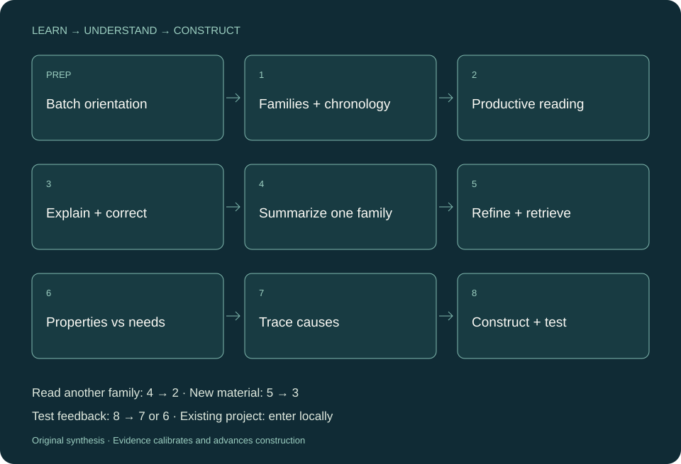

领域学习与方法地图
读方法家族与演进，比较机制、条件和未解限制。需求与方法属性分别呈现。
查看构造示例 →01 界定真正的问题
02 检查机制与前提
03 区分竞争解释
04 更新下一步判断
THREE WAYS TO START
只有一个主题也可以。材料更完整时，判断会更具体；缺失证据始终明确标注。
PREPARATION + EIGHT STEPS
批量初读 → 家族演进 → 省力阅读 → 机制理解 → 家族总结 → 修正检索 → 双表瓶颈 → 原因分析 → 方法构造。已有研究选择当前节点。

REASON FROM ASSUMPTIONS
先区分目标、观测和解释，追踪关键前提。跨领域借鉴要携带成立条件；验证要分别检查干预施加、机制响应与结局。
第一性原理是一种推理工具。文献、测量、推导与竞争叙述，仍承担各自主张的验证义务。
阅读十节原创方法指南 →A USEFUL RESEARCH QUESTION
什么观察，
会让我们改变当前解释？
EVIDENCE HAS A SCOPE
材料实际说了什么，是否支持这个条件下的具体结论。
由哪些依据和前提推出，哪些替代解释尚未排除。
预期什么，如何检验，什么结果让它站不住脚。
条件推导和作者报告可支持属性分析，实测性能需要真实结果。未找到近邻不证明新颖；工具与执行权限取决于当次任务。
INSPECTABLE, NOT A GUARANTEE
历史六题开发比较保留原始输出、匿名顺序反转、平局、基线胜出与分歧。它们不构成留出效果证明。
v0.5.0的新旧版真实开发比较、独立新题和匿名正反位置审阅分别记录；偏好、分歧与局限均保留。
查看实际结果与限制 →READY FOR THE NEXT QUESTION
先把当前问题说清，再决定什么值得检验。